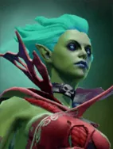
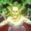

Not in the normal shop. This is one of the “spare” Undead pieces: you mainly get it when a piece holding an Ascetic's Cap is reborn as a random Undead, or through Pandaren fishing.

Exorcism
Active ability: Activates on Full Mana
Unleashes evil spirits to drain the life of nearby enemy chess pieces. At the end of the spells duration, Death Prophet is healed in proportion to the damage dealt.
| ★ | ★★ | ★★★ | |
|---|---|---|---|
| Radius | 700 | 700 | 700 |
| Spirits | 6 | 8 | 10 |
| Spirit speed | 500 | 500 | 500 |
| Max distance | 1000 | 1000 | 1000 |
| Give up distance | 800 | 800 | 800 |
| Min damage | 200 | ||
| Max damage | 200 | ||
| Heal percent | 25 | 25 | 25 |
| Average damage | 200 | ||
| Ghost spawn rate | 0.4 | 0.3 | 0.2 |
| Movement bonus | 12 | 16 | 20 |
| Cooldown (s) | 10 | 8 | 6 |
| Mana cost | 100 | ||
Stats
| ★ | ★★ | ★★★ | |
|---|---|---|---|
| Health | 900 | 1800 | 3600 |
| Mana | 100 | 100 | 100 |
| Armor | 6 | 6 | 6 |
| Magic resistance | 30% | 30% | 30% |
| Attack damage | 50–60 | 100–120 | 200–240 |
| Attack interval (s) | 1.4 | 1.4 | 1.4 |
| Attack range | 400 | 400 | 400 |
| Move speed | 500 | 500 | 500 |
 Undead · Plague
Undead · Plague
- (3) All non-Undead pieces on the board lose 10% max HP.
- (6) They lose another 30% (-40% total).
- (9) Plagued pieces also lose 5% max HP every 2s, down to a minimum of 5% of their base max HP.
 Warlock · Soul Leech
Warlock · Soul Leech
At battle start, a Warlock at full HP gives up 25% of its current HP to gain +50 mana (max 100).
- (2) All allies heal for 5% of all damage they deal.
- (4) All allies get +20% more lifesteal (25% in total).
- (6) Warlocks steal max HP equal to 50% of all damage they deal: the target loses that much max HP and the Warlock gains it.